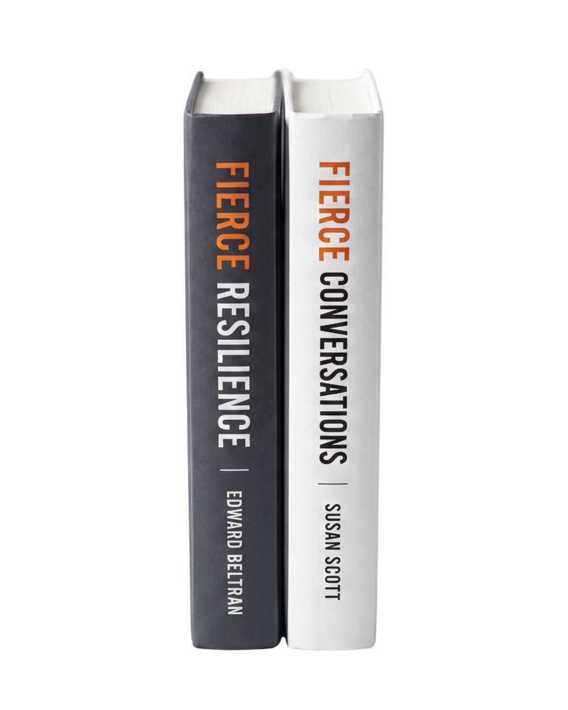

Fierce Foundations
A revolutionary approach to the conversations that matter.
Fierce builds leaders who can have it. The methodology behind the bestselling Fierce Conversations. Taught to leaders in 100+ countries for 20 years.
Trusted by leaders at
Smart organizations fail at the same thing. The conversation they’re not having. The cost shows up in turnover, stalled initiatives, and cultures that quietly become unworkable.
In 2002, Susan Scott named what most leadership books had been dancing around. Every workplace relationship is the sum of the conversations that happen and the ones that don't. Fierce Conversations sold more than a million copies and started something.
See the methodology →people have learned to have fiercer conversations. Across 100+ countries and every major industry.

Tell us about a situation that feels stuck. A relationship, a decision, a team dynamic nobody is naming. We'll show you what's underneath it and what's possible.
Built to scale across every level of leadership. Each module is grounded in the same core principle: that the conversation is the relationship.
Join a free 30-minute Fierce Learning Series and experience one of these programs live, before you commit. No slides, just a real conversation.
Reserve your spot →Immersive, facilitated workshops on site with your teams.
Live, facilitated sessions designed for engagement, not lecture.
Self-paced learning your people can take anytime, on any device.
Biometric data on where conversations land. Built with Korn Ferry.
We don't drop in a course and leave. We build a program around your people, then help it stick.
We start with a conversation about where your leaders are stuck. No pitch, no slides, just listening.
We tailor the modules, format, and pace to your people, your goals, and your culture.
Facilitated sessions, reinforcement, and Pulse data so the change shows up in how people actually lead.
Thirty minutes, no obligation. Just a conversation about your people.
Increase in leadership alignment scores across 12 leadership teams after one Confront program cohort.
Clinical leadership turnover cut in half in the year after deploying Fierce across nursing leadership.
Leaders trained annually through embedded Fierce methodology in onboarding. Five years running.
There is no question that the Fierce Conversations program was a significant contributor to our success. In an industry as competitive as ours, we can't afford not to have conversations like this every day.
I use the Fierce techniques to confront the issues and not the people. They've helped me have much calmer, more productive conversations and build more trusting relationships.
Fierce is now embedded in our organization. People are speaking up, and they're doing so in a way that's courageous, tactful, and far from limiting.